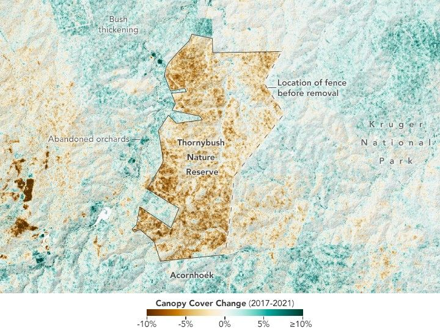

Rewilding South Africa’s Greater Kruger
The Greater Kruger region in South Africa is a vast, interconnected landscape of forests, savannas, and grasslands that includes Kruger National Park and several private and community nature reserves near the park. It’s a haven of biodiversity that harbors the “Big Five” game animals along with rare and endangered wildlife such as pangolins, cheetahs, and ground hornbills.
It’s also a dynamic region, with fast-growing towns to the west, extensive fuelwood and timber harvesting, a thriving tourism industry, widespread agriculture, and pockets of mining. Given the potential for conflict between people and wildlife, it has also become a focal point of rewilding—an effort involving the park and nearby reserves to restore wildlife habitat and natural migration patterns by removing fences, returning pasture and farmland to nature, and rethinking artificial watering holes.
From the 1960s through the 1990s, many of the reserves were fenced, preventing animals from moving freely between them and the national park. Starting in the 1990s, fences began to be removed, creating a rare opportunity for scientists to study how large-scale changes—such as rapid increases in elephant populations—affect vegetation and ecosystems.
Scientists from Jody Vogeler’s lab at Colorado State University are leading a NASA-funded project assessing rewilding-driven changes and helping wildlife managers and policymakers use remote sensing for decision-making. Their draft study, published in summer 2025, detailed an innovative technique for fusing multiple satellite datasets to assess changes in woody vegetation across three dimensions.
“We’re translating the surface data into metrics that are relevant to how land managers make decisions and monitor their landscape,” said David Bunn, a professor of forest resources management at the University of British Columbia. “What managers need to know is: What is the structural change in the vegetation, and how does that influence habitat there?”
One trend that stood out in time-series maps of the region was the impact of rewilding on woody vegetation in Thornybush, a private reserve west of Kruger National Park. In 2017, managers removed fences along the eastern side of the reserve, reconnecting more than 140 square kilometers (54 square miles) of land with adjacent reserves and the park.
From 2017 to 2019, the elephant population in Thornybush surged from 55 to 770, according to Bunn. The change coincided with a sharp reduction in vegetation height and density due to elephant browsing. High densities of elephants can limit woody growth by uprooting small trees, stripping bark from larger trees, and pushing trees over while reaching for leaves and bark. This counteracts the natural process of bush thickening, in which trees and shrubs fill in open areas over time.
Photograph, 2023: A group of at least five elephants of varying sizes wade in a shallow watering hole, with low bushy trees and green leaves visible in the background.
The map above depicts changes in canopy cover—the portion of the landscape covered by trees—in and around Thornybush from 2017 to 2021. Canopy cover in some areas dropped by more than 20 percent (brown), while areas still fenced off to the west and south saw an increase in tree canopy cover (green).
While localized increases are mainly due to regrowth after recent fires or the clearing or abandonment of farmland, other factors contribute to bush thickening, including rising carbon dioxide levels, compensatory growth after fuelwood harvesting, and changes in livestock management, Vogeler explained.
The map is based on data acquired by the GEDI (Global Ecosystem Dynamics Investigation) instrument on the International Space Station. GEDI uses lidar to sample the three-dimensional structure of forests, including tree height and density. Researchers combined GEDI data with optical observations from Landsat and radar data from PALSAR on Japan’s ALOS-1 and ALOS-2 satellites, as well as soil and topography data.
The fusion of GEDI, Landsat, and PALSAR data provides insights and forecasting capabilities that would not be possible using any single source. Landsat and PALSAR offer wall-to-wall coverage, while GEDI samples smaller areas. PALSAR’s radar can penetrate clouds and detect structural details of woody vegetation that the others cannot.
The modeling and mapping techniques are designed to help managers and policymakers anticipate and balance the needs of the region’s many stakeholders. For example, managers could evaluate how elephant browsing affects vegetation in specific areas or weigh tradeoffs between fuelwood or timber harvesting and wildlife needs.
“Proper management is critical for developing plans that will help people, wildlife, and ecosystems coexist,” Bunn said. “We’re also taking the science directly to stakeholders in South Africa through training sessions, meetings, and workshops,” added Vogeler. “We want people on the ground to understand our data, help us check and improve it, and use it to make decisions.”